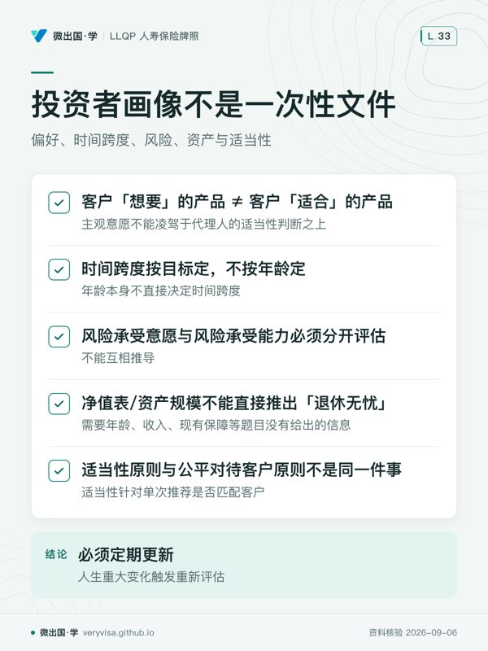

考纲把"评估客户需求与处境"（assess the client's needs and situation）定为 c1，权重 35%——分别高于"分析产品"（c2，30%）与"落实推荐"（c3，25%），但小于二者合计 55%，是全模块唯一一个超过三分之一分值的能力组件。这不是巧合：分离基金与年金合同一旦签下去，代理人真正要为之负责的不是"这个产品好不好"，而是"这个产品配不配得上眼前这个人"——配不配得上的判断依据，就是本章要建立的投资者画像（investor profile）。读完这一章，你要能做三件事：把 KYC（了解你的客户）拆成六个必须分别核实的要素，而不是笼统地"了解一下"；把风险承受意愿与风险承受能力这两个经常被混为一谈的概念完全独立地判断，不能用一个去推另一个；以及看懂适当性原则与公平对待客户原则分别管什么、谁是谁的下位概念。这三件事分别对应考场里最常见的三种陷阱题型，也是柜台工作里最容易把客户带偏方向的三个环节。
一、制度设计与底层逻辑：为什么"了解客户"是一项持续义务，不是开户手续
1. KYC 不是表格，是代理人对自己的免责证据
了解你的客户（Know Your Client, KYC）这件事在监管语言里从来不是"填一张表"，而是代理人证明自己"没有乱推荐"的持续性程序。它的法律后果落在两端：客户这一端，KYC 不到位而买错产品，损失可能追溯到代理人身上；代理人这一端，一份留痕完整的投资者画像与推荐理由信（reason-why letter，见第五章）是日后被投诉或被监管机构问询时重要证据之一，仍须与真实客户资料、沟通和交付记录一起判断。换句话说，KYC 表面上服务客户，制度设计上其实同时是代理人的责任边界——做得越彻底，代理人越安全；做得潦草，代理人和客户一起暴露在风险里。
KYC 具体要核实什么，考试口径把它拆成了远不止"风险等级"这一件事。综合 §4.1（财务状况）、§4.2（个人因素）、§4.3（投资者需求）与 §4.8（画像判定），可以收敛成六个必须分别核实、不能互相替代的要素：
| KYC 要素 | 核实什么 | 常见判读文件/方式 |
|---|---|---|
| 身份（identity） | 客户是谁、账户归属谁；识别是否存在授权代理关系（如财产授权书 POA） | 身份证件、账户申请信息 |
| 财务状况（financial situation） | 净资产（net worth）、现金流（cash flow）、良性负债 vs 不良负债 | 个税评税通知书（Notice of Assessment, NOA）、RRSP/非注册账户对账单、按揭/信用卡对账单 |
| 投资目标（investment objectives） | 这笔钱要解决什么——退休收入、应急基金、遗产规划、债权人保护等，考试口径列了 11 类具体需求 | 面谈记录、需求清单 |
| 时间跨度（time horizon） | 这笔钱多久后要用，而不是客户今年多少岁 | 目标发生的年份、退休/购房/子女教育时间表 |
| 风险承受意愿（risk tolerance）vs 风险承受能力（risk capacity） | 前者是心理上愿不愿意承受波动，后者是财务上能不能承受损失而不影响生活目标——两者必须分开评估 | 谈话与动机分析（意愿）＋净资产与现金流（能力） |
| 投资知识与经验（investment knowledge） | 客户是否理解产品结构与风险，决定代理人需要解释到多细 | 面谈、既往投资经历 |
⚠️
"风险承受意愿"与"风险承受能力"常被顺序写反
中文材料里常把 risk tolerance 译成"风险承受能力"、把 risk capacity 译成"风险承受意愿"，与考试口径原文的定义正好对调。本页统一用：risk tolerance＝承受意愿（主观心理），risk capacity＝承受能力（客观财务）。考场遇到英文原词不会有歧义，遇到中文译名时先回英文原词判断，不要死记中译名。
2. 谁与谁在博弈：客户的自我认知 vs 代理人的核实义务
这一章底层逻辑的核心冲突是：客户对自己风险承受意愿的自我评估系统性地不可靠。考试口径明确指出，投资者普遍高估自己的风险承受意愿，也常常"说一套做一套"——嘴上说"我能承受大跌"，市值真跌 20% 就要求代理人立刻转成保本产品。这不是客户在说谎，而是"愿赌服输"的自我评估天然带有事后偏差：市场平静时人人自信，波动来临时才知道自己的真实底线。

正因为如此，考试口径把责任明确压在代理人身上：代理人不能只听客户自称的风险等级，必须结合谈话内容、投资动机、恐惧点、期望值综合判断，而不是让客户自己填一个数字就采信。行业里另有一个不在本章考试口径原文出现、但业内广泛使用的第三个维度——风险感知（risk perception）：客户"自认为"处在什么风险水平，这个自我感知本身也可能与他的真实承受意愿、真实承受能力都不一致（例如把"高分红"误当成"低风险"）。三者一旦不一致，代理人的判断以承受能力（客观财务）为硬约束上限，承受意愿同样作为不能越过的约束，风险感知只作为面谈线索，不能单独作为推荐依据。
同一个投资者对不同的钱可以有不同的风险承受意愿——考试口径特别提醒这一点：一笔为退休存的钱和一笔为度假存的钱，同一个人对它们的心理承受度可以完全不同，画像是"按目标做"，不是"按人做"。
3. 法律后果：画像做错了，代理人赔的不是佣金
一旦投资者画像与实际推荐的产品出现明显错配——比如把一位风险承受能力低的客户配进高风险股票型分离基金——考试口径与行业规则给出的后果链条是：客户投诉 → 保司/MGA 合规部门介入调查推荐理由信是否充分 → 情节严重则进入省级保险监管机构（BC 为 Insurance Council of BC / BCFSA）的纪律处分程序，可能涉及罚款、暂牌或吊牌。这条链条能不能启动，第一手证据就是当初的投资者画像文件与推荐理由信有没有做全、做对——这正是为什么这一章占考纲 35%：它不是背景知识，是代理人的执业风险管理。
二、2026 现行政策与数字：考试口径没写到、或写死了的地方
三列双口径表：CPP 政府保障层的计算，考试口径只算了一半
考试口径 §4.4.2 讲的 CPP（Canada Pension Plan）供款与给付机制，只覆盖了第一层结构，而 2024–2025 年逐步落地的第二层增强（CPP2/YAMPE）考试口径完全没有——这不是"数字过时"，是整套计算模型少了一层，直接影响退休收入需求分析（investor needs 里的"退休收入需求"一项）：
| 考试口径 2022 说 | 2026 现行 | 考场答·柜台做 | |
|---|---|---|---|
| CPP 供款结构 | 只讲一层：起缴额 $3,500/年，超过部分按费率供款直至 YMPE（当年收入上限） | 两层结构：第一层仍是 YMPE（2026 = $74,600，起缴额 $3,500 长青未变，最大可计提收入 $71,100）；第二层新增 YAMPE（2026 = $85,000），YMPE 与 YAMPE 之间的 $10,400 收入区间按 CPP2 费率 4% 计提（劳资各付） | 若考题只问"CPP 供款起点"，答 $3,500（长青未变）；若考题涉及年收入超过 $74,600 的高收入客户的退休收入规划，柜台必须把 CPP2 那一层的额外供款与未来给付一并算入，不能只套考试口径的第一层公式 |
| 双方年度最高供款 | 未提及第二层，因此没有对应数字 | 第二层劳资各自年度最高缴 $416 | 需求分析题若给出高收入客户（如年收入 $90,000），退休收入缺口计算必须扣除/纳入这笔额外供款与未来对应给付，考试口径公式在这类客户身上是不完整的 |
ℹ️
这不是"数字变大了"，是"多了一层"
与 Assuris、TFSA 限额这类"同一个数字换了新值"的情况不同，CPP2 是考试口径整个计算框架里缺失的一整层——套考试口径公式给年收入超过 YMPE 的客户做退休收入需求分析，得出的政府保障层估计会系统性偏低。这类"缺一层"比"数字旧了"更容易被忽略，因为考试口径的公式本身看起来完整、能算出一个数，只是那个数不是全部。
考试口径完全没有的产品：FHSA，但 2026 年的真实客户几乎必然会问
考试口径 §4.7 系统列出了注册账户家族——RRSP、TFSA、RESP、RDSP、PRPP、DPSP、DBPP、DCPP、GRRSP——唯独没有 FHSA（First Home Savings Account，首次购房储蓄账户）。这不是编写疏漏：FHSA 2023-04-01 才正式开户，晚于考试口径 2022 年成文，属于时间线上不可能收录。2026 年现行：年度参与额度 $8,000，终身上限 $40,000（自立法起未变），未用额度可结转（单年最多再加 $8,000，即单年上限 $16,000）；供款可抵税（像 RRSP），提取用于首次购房则全免税（像 TFSA）——这是它唯一"两头占"的结构性特征，考试口径给出的"资产审阅清单"（§4.1.1）在真实客户身上因此天然有缺口，代理人做 KYC 财务状况审阅时必须自己把 FHSA 对账单加进判读清单。
TFSA 与 RRSP 的机制本身考试口径讲的是长青公式（18% 规则、无限期结转、超额 $2,000 非抵税缓冲及其适用条件），只有年度数字需要更新：2026 年 TFSA 年度限额 $7,000（2009 年已满 18 岁且以后各年均符合居民资格时，历年年度限额合计 $109,000；不等于人人现有余额）、RRSP 年度 Dollar Limit $33,810（新增空间按上年 earned income 的 18% 与年度 Dollar Limit 取小，再考虑 PA、PAR、PSPA 与未用额度；个人可扣除额核 NOA，考试口径 Sarah 案例的算法完全不变）。
ℹ️
总成本报告 TCR：原文已核实，分离基金明确在覆盖范围内
2023-04-20 CSA（加拿大证券管理局）与 CCIR（加拿大保险监管者理事会）联合公布的《CCIR Individual Variable Insurance Contract (IVIC) Ongoing Disclosure Guidance》原文明确把分离基金合同（IVIC）与共同基金一并纳入总成本报告（TCR）框架，且给出保险侧独有的披露项——除基金费用率（%）与全部基金费用合计（$）外，分离基金合同若保证成本未计入其他费用，须单列披露"保证成本合计（$）"这一项，是共同基金/投资基金侧完全没有的独有科目（因为共同基金没有保证）。原文写明生效日 2026-01-01，两侧（证券登记人与保险公司）都须在 2026 年度（截至 2026-12-31）起首次交付新格式年度报告，即投资者最早 2027 年初才会收到。该指引本身对保险公司不具直接法律约束力，需各省保险监管机构各自采纳落地——BC 已由 Insurance Council of BC 于 2025-12-10 正式采纳（CCIR/CISRO 2025-11-19 发布的《分离基金整合指引》），要求持牌代理人在 IVIC 全生命周期落实，明确点名的覆盖主题同时包括"推荐、建议与披露"与"年度对账单（总成本报告）"——说明推荐/适当性判断与 TCR 年度对账单不是两件独立的事，而是同一份 2025 年整合指引里并列的两个章节（CSA（加拿大证券管理局）与 CCIR（加拿大保险监管者…、Insurance Council of British…）。
三、实务流程：从一张净值表到一份推荐理由信
1. 财务状况审阅：先看数字，再看数字背后的行为模式
代理人核实客户财务状况的标准动作是编制两张表：净资产表（net worth statement）＝全部资产市值−全部负债，现金流量表（cash flow statement）＝净收入−全部支出。这两张表本身只是加减法，考试口径反复强调的是读表找出异常波动的合理解释——比如某个月现金流为负，如果对应的是"年度一次性的家庭旅行支出"，这是正常波动，不是财务警讯；但如果是持续性的透支，就是财务能力的真实红旗。判读文件通常包括：个税评税通知书（NOA，可核 RRSP 扣除限额；TFSA 要用全部机构的实际供款与提款记录计算，CRA 账户也不实时更新）、RRSP/非注册账户对账单、雇主养老金计划对账单、按揭/HELOC/信用卡对账单——2026 年真实客户还应加上 FHSA 对账单。
负债审阅要分清良性负债（按揭、投资贷款——用于增值资产）与不良负债（消费型信用卡债），但考试口径特别提醒：能否按期偿还才是关键，不因"良性"标签而豁免风险评估——把按揭当成"没问题的负债"直接忽略，是常见的审阅疏漏。反向按揭（reverse mortgage）是负债不是资产，房主身故或卖房时须偿还，会侵蚀留给继承人的遗产，KYC 时必须计入负债而不是资产。
2. 授权与法律考量：财产授权书（POA）不是"万能钥匙"
个人因素审阅里有一项容易被低估的法律考量：财产授权书（Power of Attorney for property, POA）。授权人（grantor）指定代理人（attorney）在自己因病无法自理时代管财产，attorney 的权力很大——可以转换、出售投资——但通常无权变更人寿保单或分离基金（IVIC）的受益人指定。各省权限须分别核法；不能把教学概括当作完成了全国法域比较。
✕
BC 例外有条件
考试口径 AMF 9e 2022 提到 BC 例外，但这不能替代现行法律。BC《Power of Attorney Act》s.20 对持续授权代理人作出限定：变更本人已有受益人指定须法院授权；更新、替换或转换类似文书时，可依条件沿用本人有能力时指定的同一受益人；另建文书时的新指定限本人遗产。代签申请表不等于可任意换受益人。
| 维度 | 考试口径概括（各省实务另核） | BC 现行 |
|---|---|---|
| POA 代理人能否变更人寿保单/IVIC 受益人 | 考试口径提示一般限制与 BC 例外 | BC 现行改已有指定须法院授权，沿用旧指定与新文书另按 s.20 |
| 依据 | 行业惯例（保护"受益人是委托人真实意愿"这一原则） | BC《Power of Attorney Act》s.20 已作为现行依据：法院授权、类似文书沿用及新文书指定遗产分别有条件 |
| 与 DSC 规则的关系 | 两种问题应分开核 | 受益人权限看授权书法；不能按宽松或严格的印象推论 |
3. 从画像到推荐：适当性原则是那座桥
KYC 收集到的信息（财务状况＋需求＋风险画像）本身不产出任何结论，真正把它变成一份产品推荐的桥梁是适当性原则（suitability principle）：代理人持续性地比对"投资特征"与"投资者目标/约束/风险画像"三者，做出适配建议——注意它是持续性的，客户人生发生重大变化（退休、离婚、继承遗产、失业）或产品特征本身发生变化时，都必须重新评估，不是开户当天做一次就永久有效。
适当性原则与第五章会展开的公平对待客户原则（Fair Treatment of Customers, FTC）是两个不同层级的概念，容易被学员当成同一件事：
- 适当性（suitability）：针对单次推荐——这一个产品配不配这一个客户，是画像之后的第二步判断。
- FTC：贯穿销售全流程的监管原则（考试口径列出 7 条，从产品设计到理赔处理都覆盖），适当性只是 FTC 众多要求中的一项，FTC 的范围比适当性宽得多。
代理人比对"投资特征"时，佣金或追踪费不得影响判断——考试口径原文把这一条单独强调，是因为它是"适当性原则"在实务中最容易被违反的一环：产品佣金高不等于产品适合，把两者混为一谈是可能导致适当性失守的因素。
4. 一份完整示例：从 KYC 到推荐理由信（以下姓名与数字均为示例，不对应真实客户）
温哥华的 Priya，52 岁，中学教师，已婚，配偶全职照顾家庭、没有有偿工作，两人育有一名 16 岁子女。这份示例走完本章讲的每一步，展示各环节怎么落到一张真实的画像文件上。
第一步·KYC 六要素：身份——本人为唯一投保人与受保人；财务状况——年薪 $88,000，配偶无收入，净资产 $410,000（含 RRSP $180,000、TFSA $45,000、房屋市值 $220,000 减按揭余额 $35,000），现金流量表显示每月结余约 $600；投资目标——退休储蓄（占比最大）＋子女三年后的大学教育费（次要）；时间跨度——退休储蓄类 13 年（65 岁退休），教育类 3 年；投资知识与经验——持有 GIC 与平衡型共同基金 8 年，未接触过分离基金或权益类基金。
第二步·风险承受意愿 vs 风险承受能力，分开判断：面谈中 Priya 表示"能接受短期下跌，只要长期能涨"（意愿：中高）；但代理人核实财务状况后发现，她是家庭唯一收入来源、应急储蓄只够 3 个月开支、且 3 年后有一笔确定要用的教育费——承受能力客观上偏低。按本章第一节的纪律，能力与意愿都约束推荐，采用二者中较低的风险承受水平：最终画像判定为"风险承受能力：中低"，配置受较低能力限制，同时如实保留她的中高意愿记录。
第三步·流动性核对：13 年后才用的退休储蓄部分可以配置较长期限、允许中途波动的产品；3 年后确定要用的教育费部分，流动性要求高、几乎不能承受本金波动——这笔钱不适合放进无到期保证的高风险配置，即使她本人愿意冒险。两笔钱的目标不同，画像必须分开做，不能用同一个风险等级覆盖全部资金（呼应本章"画像按目标做，不是按人做"的原则）。
第四步·推荐理由（reason-why）：退休储蓄部分（$130,000，含 RRSP 转入）建议配置 75/100 保证档位的平衡型分离基金——理由是保证机制适配她"能接受波动但仍想要保底"的心理特征，100% 身故保证也能满足她关心的遗产规划（受益人指定绕开遗嘱认证）；教育费部分（$35,000）建议保留在 到期与用款日匹配的合资格 GIC 等；货币市场型分离基金仍须另核费用、短期市值与到期保证，不能等同存款保本，理由是 3 年内确定要用、流动性与本金保全优先于收益。佣金结构在推荐理由信中单独列出，并注明"未影响本次配置比例的选择"。
第五步·重大变化后的复核记录（本例设定 18 个月后）：Priya 提前退休并申领教师年金，家庭收入结构改变。代理人的复核记录应包含：触发事件（提前退休，日期）、复核项（重新评估收入替代来源、时间跨度是否因退休提前而缩短、原定 13 年的退休储蓄配置是否仍适配）、复核结论（教育费部分不变；退休储蓄部分因时间跨度实际缩短且新增年金收入，建议下调权益类比重）、客户签字确认日期。这份复核记录本身就是本节反复强调的"代理人自己的免责证据"——案例三（李女士）之所以出问题，正是因为代理人没有建立这样的复核触发与留痕机制。
四、2026 市场：风险问卷之后，还要核产品与现金流
以下是 2026-09-04 回读官网确认的产品实例。各行说明它对应本章的哪个判断；实际销售资格和责任范围仍须核对具体合同。
| 公司与产品线 | 对应本章的判断与使用边界 | 官网出处 |
|---|---|---|
| RBC Insurance · RBC Guaranteed Investment Funds | Invest、Series 1、Series 2 体现不同保障安排。客户回答「怕亏钱」之后，应继续问何时需要赎回、是否理解保证触发日期，不能只把他分进保证最高的一档。 | rbcinsurance.com |
| iA Financial Group · Classic Series 75/75 | 不同保证系列可有相同基金阵容。风险意愿低并不自动对应某个保证比例；底层基金风险和中途用钱能力要各自核实。 | ia.ca |
| Canada Life · Standard series | 信息册将系列、保证档位及销售费分开。画像除了风险意愿与承担能力，还应覆盖总资产、持有期限、费用理解及外部流动资金。 | Canada Life（The Canada Life … |
问卷是访谈的起点。客户愿意承受亏损，却在短期内必须动用大部分资产时，财务承担能力可能比主观意愿更低；反过来，有能力承受也不表示愿意。推荐理由应说明两者如何共同约束选择，不能为了迁就产品而改问卷分数。
自拟核对场景：一位准备退休的客户想保留生活费储备，同时让余款参与长期投资。先把近期必要开支隔开，再比较适合长期资金的产品、保证时点及费用；如果说明不了提前取款的后果，就还没有完成适当性说明。
复核应覆盖退休、婚姻、收入或负债等重大变化。上述检查说明可能的失误位置，不是对实际投诉案件频率的统计；真实纪律案例须以公开决定中的事实与理由为依据。
五、历史变革：从"代理人主观判断"到"结构化留痕"
FTC 要求在客户整个关系期间公平对待客户。结构化访谈、真实的客户资料与清楚的推荐理由，有助于呈现适当性判断；文件齐全仍不等于判断正确。
风险承受意愿与能力须分别评估。客户的主观态度要与收入、负债、资产流动性和目标相互核对；不能从持有保守资产直接推导财务承担能力低。
六、案例（案例一至三人物与数字均为示例，不对应真实客户；案例四为官方纪律决定及未核定线索）
案例一：保守型老人被推高风险基金（列治文）
75 岁的王先生退休多年，唯一收入来源是 CPP、OAS 与一份小额企业年金，储蓄 $180,000 全部存在 GIC 里。某代理人在一次推销会上向他推荐了一只全球股票型分离基金（假设底层 100% 权益配置，用款日前尚未到保证日），理由是"分离基金比 GIC 收益高"。这份推荐没有对应的投资者画像文件，也没有推荐理由信说明为什么这个高风险配置适合一位没有其他收入来源、随时可能需要动用这笔储蓄的老人。
常见错法：把"分离基金比共同基金多一层保证"直接等同于"分离基金比 GIC 更安全"，忽略了到期保证只在到期日或身故当天生效，中途市值下跌一样要承担。王先生这样的客户，风险承受能力客观上很低（唯一的储蓄、没有其他收入缓冲），无论他本人是否被说动、表示"愿意试试看"，代理人都应以承受能力作为硬约束，推荐更保守的配置（如保守型分离基金或直接续做 GIC）。
案例二：年轻人过度保守，时间跨度被年龄误导（素里）
28 岁的陈小姐把每年 TFSA 的全部供款都放在货币市场基金，理由是"我还年轻，等有钱了再考虑冒险"。代理人在做投资者需求审阅时发现，这笔钱的真实目标是退休储蓄，而不是三五年内要用的应急资金——她的真实时间跨度长达 35 年以上。
常见错法：把"客户很年轻"直接等同于"客户的时间跨度长、应该配置激进产品"，这个推断本身就不成立，但陷阱在于反过来：时间跨度要按资金对应的目标来判断，不是按客户的年龄来判断。陈小姐年纪轻，但如果这笔 TFSA 存款的目标是"两年内的婚礼开支"，时间跨度就是短的，不该配股票型基金；反过来，一位 68 岁但已有稳定退休金、这笔钱纯粹留给孙辈教育基金（20 年后才用）的客户，时间跨度反而是长的。年龄从来不是时间跨度的直接代理变量，目标才是。
案例三：投资者画像过期未更新（温哥华）
李女士 5 年前做过一次完整的投资者画像评估，当时她 50 岁、在职、风险承受能力评为"中"，配置了一份平衡型分离基金。此后她经历了离婚（个人净资产大幅缩水）与提前退休（收入来源改变），但从未联系代理人更新画像，代理人也未主动提醒复核。5 年后市场出现较大回调，李女士的分离基金市值下跌明显，她才发现自己现在的真实财务处境已经远远无法承受这个当年设定的配置。
常见错法：默认"客户没主动联系＝维持现状没问题"。考试口径明确要求适当性评估是持续性的，客户人生发生重大变化时代理人有主动重新评估的义务，不能把"沉默"当成"默许"。这起案例最终的处理焦点会落在：代理人是否曾建立过定期复核机制（如年度画像更新提醒），有没有留痕证明自己尽到了这份持续义务。
案例四：纪律决定中的义务与处分
Insurance Council of BC 对 Ali Nezamkhah Ahadi 的正式命令于 2026-03-16 生效：罚款 $10,000、调查费用 $7,625，并须完成指定课程及接受两年实际持牌期间的监督；两笔款项要求于 2026-06-15 前缴付。这里的“两年”不是不论是否持牌都自动走完的两年日历时间。该决定把销售不适当保单及客户利益放在核心位置，不能据报道标题扩大为未被认定的指控。
另一宗 Siu 案目前仅找到二手报道，尚未取得对应官方决定全文，因此本页不保留其罚款、贷款数额、限制期限或具体指控。纪律案例应逐项区分已认定事实、争议与处分，不能用新闻报道补齐缺失事实。
七、考试陷阱与双口径清单
- 客户"想要"的产品 ≠ 客户"适合"的产品——题目常设置客户明确表达偏好（"我就是想买这个高收益的"）的场景，诱导选"尊重客户意愿"，正确答案要看这个偏好是否通过了风险承受能力（客观财务）这道硬约束，客户的主观意愿不能凌驾于代理人的适当性判断之上。
- 时间跨度按目标定，不按年龄定——题目给出客户年龄作为干扰信息，正确解法是先找出这笔钱对应的具体目标与目标发生的时间点，年龄本身不直接决定时间跨度（案例二）。
- 风险承受意愿（主观）与风险承受能力（客观）必须分开评估，不能互相推导——高净值不等于高承受意愿（Tim 型陷阱），愿意冒险也不代表财务上承受得起（反向陷阱）；题目常给出两者不一致的人物设定专门测试这一点。
- 净值表/资产规模不能直接推出"退休无忧"或"不需要保险"这类结论——CISRO 公开样题曾用一位资产明细全部押注 GIC、储蓄充足、负债很低的客户测试这个陷阱：题目用保守持仓提示低风险承受意愿；这不等于已证明客观财务承受能力低，"资产总额可观所以退休无忧"或"不再需要人寿保险"都需要年龄、收入、现有保障等题目没有给出的信息，属于用不充分信息强行下结论。
- 投资者画像不是一次性文件，必须定期更新，人生重大变化触发重新评估——题目设置"客户几年前做过评估、期间发生退休/离婚/继承"的场景，正确答案永远是"需要重新评估"，不是"沿用原有画像"（案例三）。
- BC 持续授权代理人的受益人权限依 s.20 分情形：改本人既有指定须法院授权；类似文书可有条件沿用；新文书的另行指定限遗产。考试口径的 BC 例外提示不等于代理人可任意换人，也不能据此宣称别省绝无例外。
- FHSA 是考试口径空白但 2026 年真实客户高频接触的账户——遇到涉及首次购房客户账户比较的场景题，不能因为考试口径没讲就假装 FHSA 不存在，它是"供款抵税＋提取免税"两头占的独特结构，与 RRSP Home Buyers' Plan、TFSA 是三个需要比较的选项。
- 适当性原则与公平对待客户原则不是同一件事——适当性针对单次推荐是否匹配客户，FTC 是贯穿全流程的监管原则、覆盖范围更广，适当性只是 FTC 众多要求中的一项，题目问"哪个原则专门管这一次的产品匹配"，答适当性，不是笼统答 FTC。
术语双语表
| English | 中文 | 一句机制 |
|---|---|---|
| Know Your Client (KYC) | 了解你的客户 | 代理人核实客户身份、财务状况、需求与风险画像的持续性程序，也是代理人自身的责任证据 |
| risk tolerance | 风险承受意愿 | 客户对本金亏损的主观心理承受度，不能只听客户自称，需结合谈话综合判断 |
| risk capacity | 风险承受能力 | 客户财务上能承受多少损失而不影响生活目标的客观测度，与风险承受意愿完全独立评估 |
| risk perception | 风险感知 | 客户自认为所处的风险水平，可能与其真实承受意愿、承受能力都不一致，只作面谈线索 |
| suitability principle | 适当性原则 | 代理人持续比对投资特征与客户目标/约束/风险画像，做出适配建议的义务 |
| Fair Treatment of Customers (FTC) | 公平对待客户原则 | 贯穿销售全流程的监管原则，适当性只是其中一项要求 |
| investor profile | 投资者画像 | KYC 信息汇总后形成的客户风险与需求档案，是推荐产品前必须先完成的一步 |
| reason-why letter | 推荐理由信 | 代理人对每份推荐的书面披露，须与客户讨论并存档，是被质疑时的证据 |
| net worth statement | 净资产表 | 全部资产市值减全部负债，正负说明资产负债关系，不能单凭净值符号判定现金流可持续性 |
| cash flow statement | 现金流量表 | 净收入减全部支出，判断异常波动是否有合理解释是核心技能 |
| Notice of Assessment (NOA) | 评税通知书 | CRA 审完报税后发出，可核 RRSP 扣除限额；TFSA 另以实际交易记录计算 |
| good debt vs bad debt | 良性负债 vs 不良负债 | 前者用于增值资产、后者消耗财力，但能否按期偿还才是评估关键 |
| reverse mortgage | 反向按揭 | 把房屋净值预付给房主，房主卖房或身故须偿还，是负债不是资产 |
| Power of Attorney (POA) for property | 财产授权书 | 代管财产；BC 持续授权代理人改已有受益人指定须法院授权 |
| Pension Adjustment (PA) | 养老金调整 | 雇主提供养老金计划的当年 PA 会减少次年 RRSP 供款额度 |
| First Home Savings Account (FHSA) | 首次购房储蓄账户 | 2023 年上线，供款可抵税、提取免税两头占，考试口径全册未覆盖 |
| Yearly Maximum Pensionable Earnings (YMPE) | 年度最高可计提收入（第一天花板） | CPP 第一层供款上限，2026 年 $74,600 |
| Yearly Additional Maximum Pensionable Earnings (YAMPE) | 年度最高附加可计提收入（第二天花板） | CPP2 增强层供款上限，2026 年 $85,000，考试口径完全未覆盖 |
| suitability vs FTC | 适当性 vs 公平对待客户 | 前者管单次推荐匹配度，后者是覆盖全流程的上位监管原则 |
| Home Buyers' Plan (HBP) | 购房者计划 | 符合 HBP 条件可从 RRSP 提款暂不计收入，未按规定偿还部分须计收入，与 FHSA、TFSA 构成首次购房三选项 |
下一步：这一章建立的投资者画像是第五章"分离基金与年金推荐"的直接输入——42 道题覆盖本章每一节；练习池与模考专属池分开。第五章会展开推荐书应含的 12/6 项要素、reason-why letter 的具体披露义务，以及分离基金/年金合同（IVIC）的受益人指定与理赔权限细节，那一篇会再次引用本章的 BC POA 例外——受益人指定的完整故事，要把这两章放在一起读才算完整。
本页知识卡
不看正文也能拿到这一节的核心内容：先看导读，再看图。点图放大，左右翻页。
- 先看先看税务两端怎么处理，再看额度与结转规则。
- 易漏账户较晚出现，旧考试范围没有收录；真实客户审阅仍要纳入。
- 下一步去练习，把首次购房账户放在一起比较。

- 先看先看更新结论，再用前面各格逐项排除常见误判。
- 易漏偏好、年龄、净值都不能单独替代目标、客观能力或现有保障信息。
- 下一步去练习，人物题先标目标、风险和重大变化。